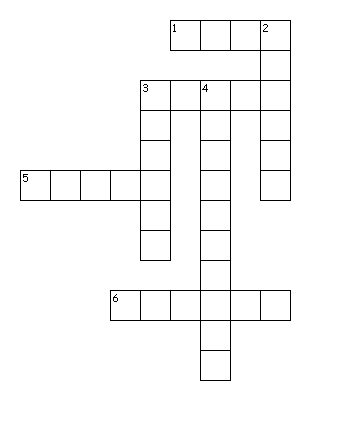

This Week: Deuteronomy 26:1-11 Psalm 91:1-2, 9-16 Romans 10:8b-13 Luke 4:1-13
Elementary School Pew-work
Unscramble the missing words:
When Jesus returned from the (odrJan) ____________ River, the power of the oHyl) _____________ Spirit was with him, and the (ipiSrt) ____________led him into the desert. For forty days Jesus was tested by the (dviel ____________, and during that time he went without eating. When it was all over, he was (hyrgun) _____________. The devil said to (euJss) _____________, "If you are God's Son, tell this (steon) _____________ to turn into bread _____________." Jesus answered, "The (crertusSip) _____________say, `No one can live only on (dfoo) _____________.' "
|
|
 |
Across 1. No-one can live only with this 3. The Lord 5. a simple basic food 6. The third person of the Trinity |
Down 2. place of stones and dryness 3. the name of a river 4. written teachings |
1.
Where did Jesus go right after his
baptism?
________________________________________________________________________________
2. How long did Jesus stay there?
________________________________________________________________________________
3. How did the devil ask Jesus to prove he was the Son of
God?
________________________________________________________________________________
4. How did Jesus answer the
devil?
________________________________________________________________________________
Next
week: Genesis
15:1-12, 17-18
Psalm
27
Philippians
3:17-4:1
Luke
13:31-35
or Luke
9:28-36